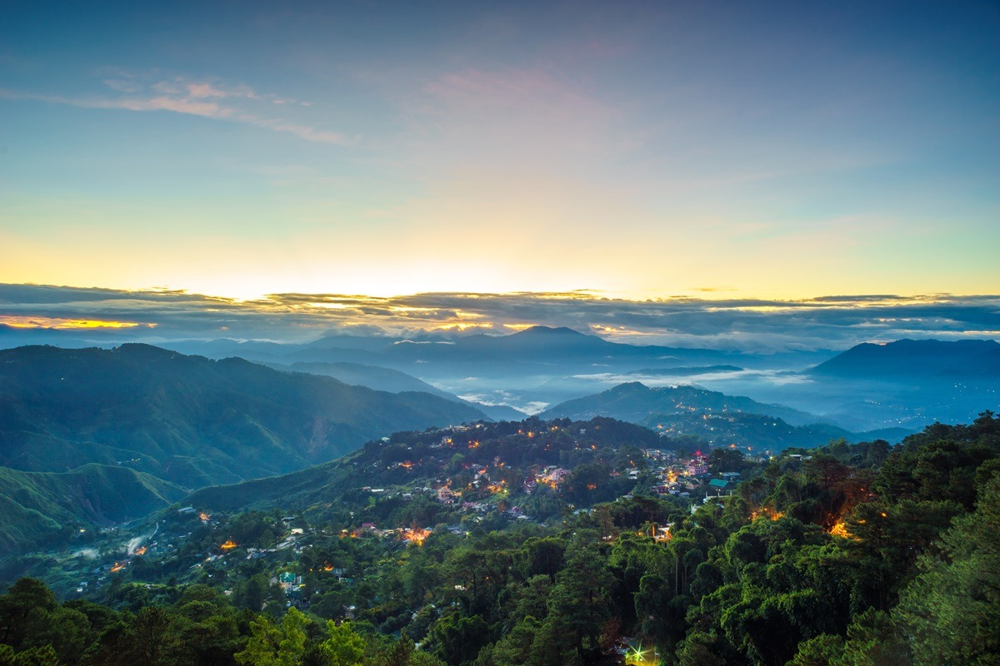
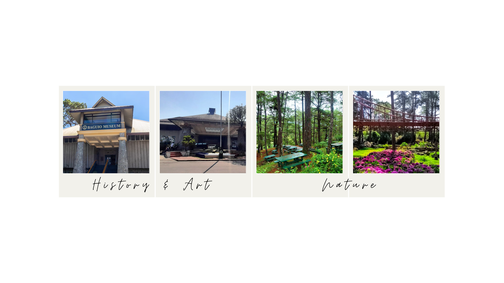

Welcome!
Welcome to my travel page! This simple website highlights my favorite things or places, in the City of Pines!. Explore its tourist attractions and food or spots to try out.
Famous Food/Spots in Baguio
- Goodtaste Restaurant
- The Farmer's Daughter Restaurant
- Hill Station
- Arca's Yard
- Foam Coffee
Must visit places!
Atleast one of these places, must you try! If you are into touring around a museum or fascinating history, then Baguio Museum and Convention center are for you! However, if you would prefer walking surrounded by nature, then Camp John Hay and the Botanical Garden are for you!
Contact Information
For more information, visit: Baguio City Official Website
Email: 20198203@s.ubaguio.edu